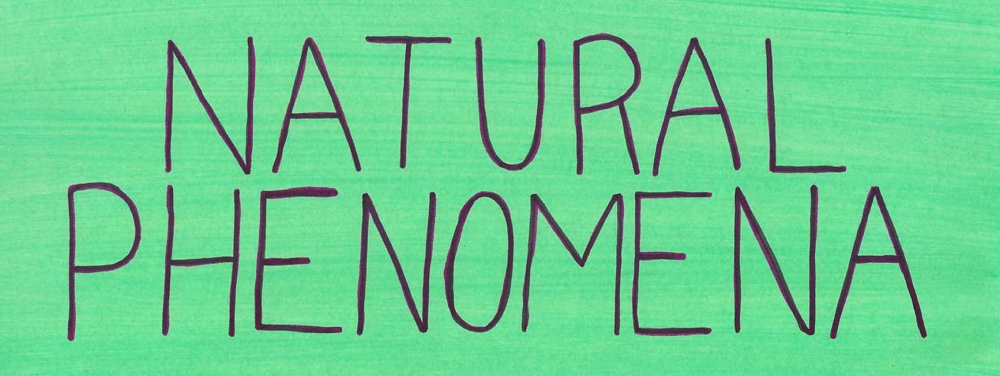

NATURAL PHENOMENA
November 2017
Saturday, November 11, 2017 8:30 PM 20:30 Thursday, November 30, 2017 9:30 PM 21:30
NOVEMBER 2017 AT LITTLE BERLIN MAIN GALLERY NATURAL PHENOMENA
November 11th - November 25th 2017
Opening Reception: November 11th 6:00 - 9:00pm
Gallery Hours:
Sunday, November 12th and Sunday November 19th, 12:00-4:00pm
Little Berlin
2430 Coral Street
Philadelphia PA 19125
Natural Phenomena (Painting Show) is a collaboration of human-made and nature-made artworks and performative experiences. Using color, portraiture, and personal narrative, participating artists collapse distinctions between traditional and contemporary picture-making. Boundaries between artist, viewer, and environment dissolve.
Participating artists:
- Miles Burke (Austin, TX)
- Kathryn Hedley (Philadelphia, PA)
- Drew Kohler (Philadelphia, PA)
- Douglas Kueker (Detroit, MI)
- Bettina Nelson (Philadelphia, PA)
- Jeanne O’Shell (Philadelphia, PA)
- “Party” (Steve) (Philadelphia, PA)
- Tiago Schmidt (Philadelphia, PA)
- Chuck Schultz (Philadelphia, PA)
- Virginia Mae Smith (Philadelphia, PA)
- Louise Vinueza (Birchrunville, PA)
- Vera Weinfield (Greensboro, NC)
- Veronica Ponce de Leon (Philadelphia, PA)
- Mackenzie Fox (Washington, DC)
curated by Alyssa Kreilick
Little Berlin will be donating half of the proceeds from the opening reception of Natural Phenomena to Hurricane Maria relief efforts in Puerto Rico.
Also on view will be selections from Little Berlin’s zine library.
for more information, please contact Alyssa Kreilick: alyssakreilick@gmail.com
ADDITIONAL PUBLIC EVENTS:
Community Art Talk:
Members of Little Berlin and participating artists from Natural Phenomena will facilitate an open-ended conversation to discuss the artwork and Little Berlin’s role in the Kensington community. Sunday, November 12th, 12:00-2:00pm
Opening Reception of J. Pascoe’s Annex Exhibition, “Self-Care” and Little Berlin Community Potluck.
Saturday, November 18th, 6:00-9:00pm
Annex Film Screening of “Vacation in November” curated by Em Jensen + Closing Reception for Natural Phenomena.
Saturday, November 25th, 6:00-9:00pm
